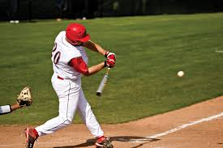
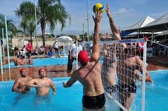
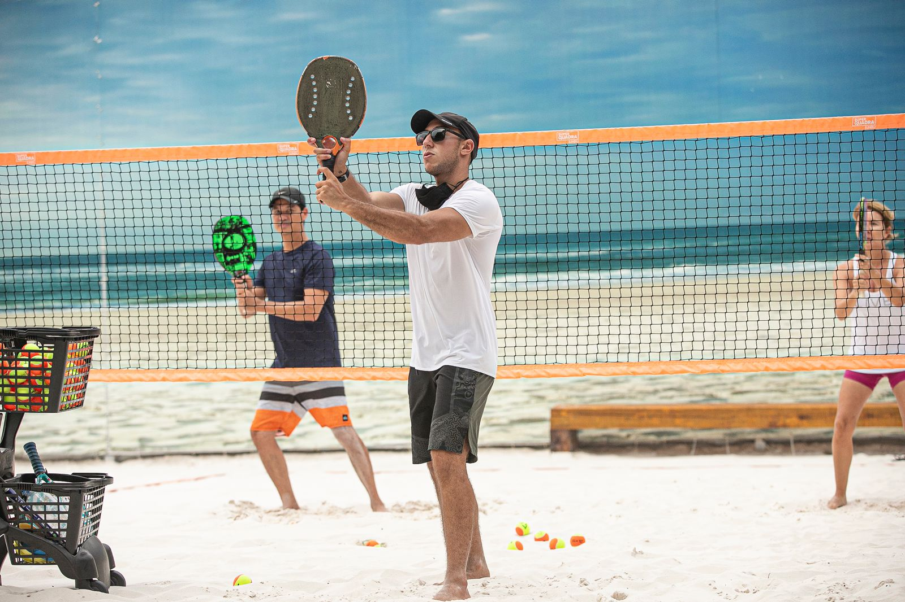

| Esporte | Origem | Ambiente | objetivo | Equipe |
|---|---|---|---|---|
 Baseboll |
EUA, 1971 | Campo com 1/4 de cículo, de 92 a 108,2m de raio. | Realizar o maior número de corridas. | Nove jogadores em cada time. |
 Beach Soccer Beach Soccer |
1930, Brasil | Quadra de areia com 35 ou 37 m x 26 ou 27 de largura. | Realizar gols no campo adversário. | Cinco jogadores em cada time. |
 Biribol |
1968, Brasil | Piscina com 4 x 8 x 1,3m | Derrubar a bola na quadra adversária | 2 a 4 jogadores por time. |
 Frescobol |
Brasil, 1946 | Ao ar livre. | Manter a bola no ar pelo maior tempo possível. | Geralmente um contra o outro. |